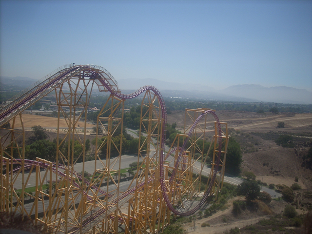
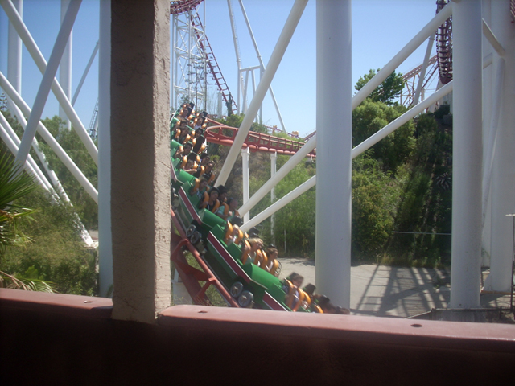
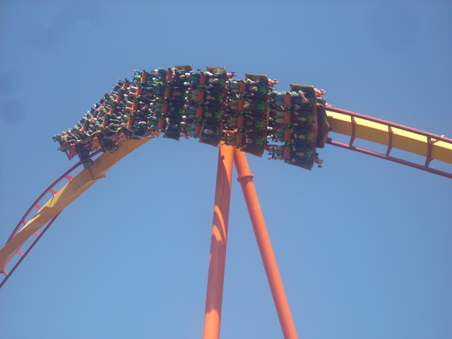
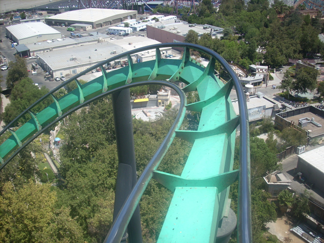
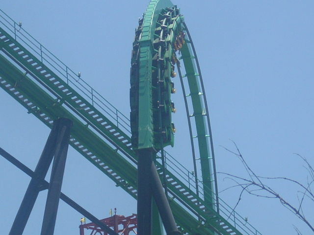
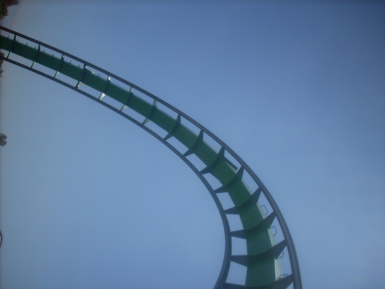
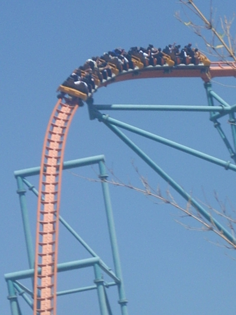
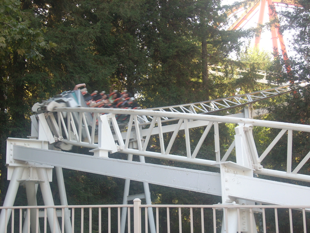

Six Flags Magic Mtn Summer 2007
 Once again, I took another trip to Six Flags Magic Mountain. Anyways, Here is X.
Once again, I took another trip to Six Flags Magic Mountain. Anyways, Here is X.
 Sorry X, But after Maverick, You're just not the best anymore.
Sorry X, But after Maverick, You're just not the best anymore.

X just looks sickly insane from here.

And now we must go on more Arrow rides since X and Magnum are SCREAMINLY awsome and Arrow.
 However, Viper is not so great and definetly NOT SCREAMINGLY awsome.
However, Viper is not so great and definetly NOT SCREAMINGLY awsome.
 These corkscrews make the ride look fun.
These corkscrews make the ride look fun.

As crack is getting cheaper every second, More and More people think that they can fly.
 Hello Random People. Does that crack feel good?
Hello Random People. Does that crack feel good?

Right now, I'm just happy that I'm not on Mantis.
 This shot reminds me of a lime for some random reason.
This shot reminds me of a lime for some random reason.

You get some hangtime in Riddlers Loop.

I'm so bored right now that I'm not going to write a caption.
 I think I feel myself growing antler ears from the High G Force.
I think I feel myself growing antler ears from the High G Force.
 You get tossed around on Riddlers Revenge like Human Salad.
You get tossed around on Riddlers Revenge like Human Salad.
 This part right here is the Great Bear part of Riddlers Revenge.
This part right here is the Great Bear part of Riddlers Revenge.
 You can ride this just about anywhere.
You can ride this just about anywhere.
 Dammit Magic Mtn! Open the other side of Collosus so I can kick someones ass in Coaster Racing.
Dammit Magic Mtn! Open the other side of Collosus so I can kick someones ass in Coaster Racing.
 And here is the SCREAMINGLY awsome Scream!!!!
And here is the SCREAMINGLY awsome Scream!!!!
 Here is one of Dominators flaws.
Here is one of Dominators flaws.
 Dominators still better though.
Dominators still better though.
 And here you see Scream's corkscrews just sitting in a parking lot. I wonder what they're doing here.
And here you see Scream's corkscrews just sitting in a parking lot. I wonder what they're doing here.

Its a shame that that doesn't have airtime.
 This may just be called the Anti Magnum.
This may just be called the Anti Magnum.
 Na,Na,Na,Na,Na. I didn't black out. Na,Na,Na,Na,Na.
Na,Na,Na,Na,Na. I didn't black out. Na,Na,Na,Na,Na.

Just seeing Revolution just makes me happy that Eizner didn't completely destroy Screamin.
This is for Wildcat being smooth and Zipper not being at the fair.
Home